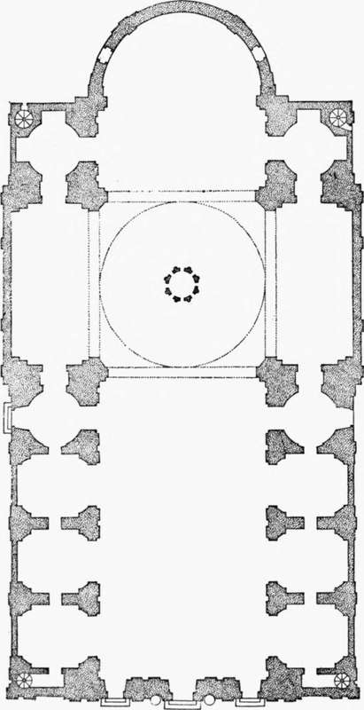

Church Architecture Of The Roman Renaissance. Part 7
Description
This section is from the book "Character Of Renaissance Architecture", by Charles Herbert Moore. Also available from Amazon: Character of Renaissance Architecture.
Church Architecture Of The Roman Renaissance. Part 7
The Gesu in Rome, another large church by Vignola, and built at about the same time as Santa Maria degli Angeli, is a variation of the same scheme, and shows in a more marked degree the influence of St. Peter's. A plan of this building, the intended facade which Vignola did not live to construct, and the existing fagade by Jacomo della Porta are given in the addendum to the edition of the architect's book on the Five Orders published in 1617 already referred to (p. 84), and are reproduced in Figures 48, 49, and 50. The aisles are omitted here so that the side chapels, which communicate with each other by narrow openings in the dividing walls, open directly out of the nave. The transept is short, and extends on either side beyond the nave only by the thickness of its walls. An elevated dome on pendentives, circular on plan within and octagonal on the outside, rises over the crossing, and barrel vaults cover the nave and transept arms. The side chapels are vaulted, with small domes on pendentives, except those in the angles of the crossing, which do not require pendentives because their supports are shaped to the circular form as shown in the plan, Figure 48. These supports are made heavier than the others in order to strengthen the crossing piers, which, in consequence of this reenforcement, do not need to advance so far into the space under the great dome as they otherwise would. In Santa Maria degli Angeli the aisles prevent this treatment, and the crossing piers extend far into the nave and narrow the spans of the crossing arches.
Fig. 48. — Plan of the Gesu.
The scheme of the interior of the Gesu is a close reproduction of that of St. Peter's, though the great pilasters are of the composite, instead of the Corinthian, order, and other minor differences are noticeable. It is worthy of remark that the entablature has no ressauts except at the crossing, and the vaulting is raised upon an attic, so that no part of it is hidden from view by the cornice of the entablature, as it is in St. Peter's. It is also noticeable that, while capricious in the use of elements derived from the antique, Vignola in his church architecture eliminates mediaeval forms more completely than most architects of his time. Where in St. Peter's, for instance, the apses have celled vaults on converging ribs, he employs the plain half-dome of Roman antiquity.
Vignola's design for the fagade (Fig. 49) presents the familiar features of his style as already embodied in the earlier fagade of St. Andrea, but with additional infractions of propriety, as well as of classic form in its more elaborate details. This fagade corresponds in outline with the form of the building, except for the podium of the upper story (which contradicts the roof lines of the side chapels), and the abutting walls of curved outline over the side compartments. The chief aberrations of detail are the broken pediments of the doors and windows, and the barbaric scrollwork and hermas, the use of which this architect did much to establish. How far the barbarism of breaking the pediment was an independent freak of the Renaissance I where the middle part of the pediment is in retreat of the rest, so that the ends form ressauts. Of the complete removal of a do not know. Instances of somewhat similar treatment occur in the Roman architecture of Syria, as in Baalbek (Fig. 51), part of the cornice I know no instance in the Roman architecture of antiquity. To this, however, the architects of the later Renaissance were, in their desire for novelty of design, led. But the cornice of a pediment is, like the roof of an entire building, suggestive of shelter for the parts below. The actual necessity for such shelter may be slight, but any justification which the raking cornice has must be for expression, if nothing more, of a sheltering roof to what it surmounts (unless we are to assume that architectural design is a matter of purely fanciful composition of lines with no structural meaning or expression). To cut a piece out of the middle of it is an architectural solecism.
Fig. 49. — Facade of the Gesu, Vignola.
Fig. 51. — Pediment of Baalbek.
The actual fagade by Della Porta (Fig. 50) follows the main lines of Vignola's design, but the details are much altered. The podium of the upper story is raised in height, reversed consoles are substituted for the plain curved abutments of Vignola, and the raking cornices of the small pediments are made whole. But other aberrations take the place of those which are eliminated, as that of placing one pediment within another over the central portal, and the ugly shapes and framings of the tablets and niches that break the wall surfaces. Della Porta had acquired these habits of design from his master, Vignola, and how far Vignola himself could go in such monstrosities is shown in some of the figures of his book already spoken of. Figure 52 from this book affords an instance.
If Vignola did much to make authoritative the later ideas of the sixteenth century as to the principles of ancient art and their application to modern uses, Palladio did even more. By the example of his numerous architectural works, as well as by his writings, the influence on modern art of this famous neo-classicist has been greater than that of any other architect of the Renaissance, so that we have, in the principal countries of Europe, a style of architecture which is known as Palladian.
Fig. 50. — Facade of the Gesu, Delia Porta.
Fig. 52. — Tablet from Vignola.
1 Qualro libri dell' Architettura di Andrea Palladio, Venice, 1581.
Continue to:
- prev: Church Architecture Of The Roman Renaissance. Part 6
- Table of Contents
- next: Church Architecture Of The Roman Renaissance. Part 8